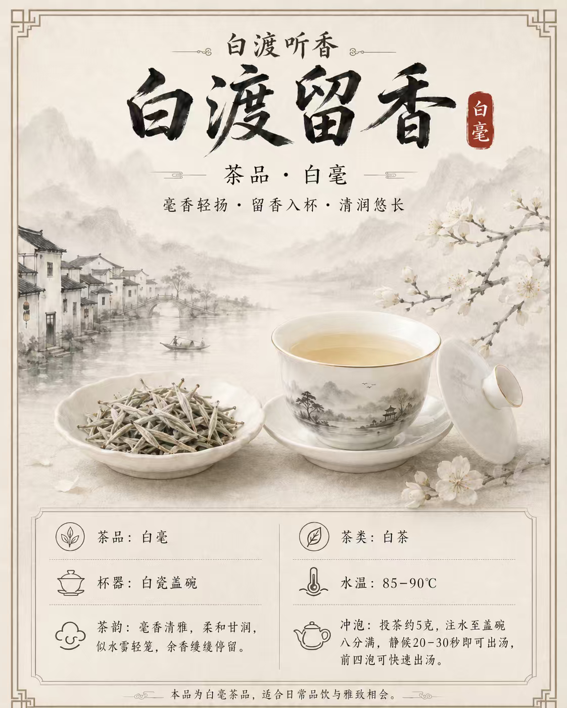
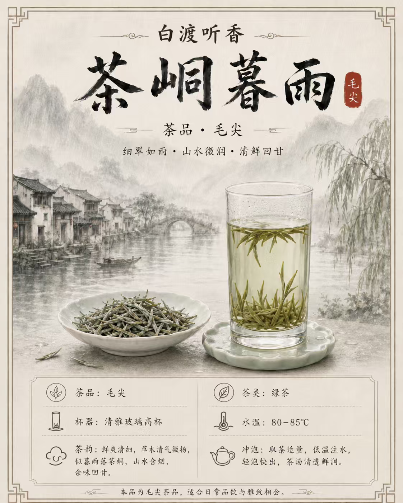
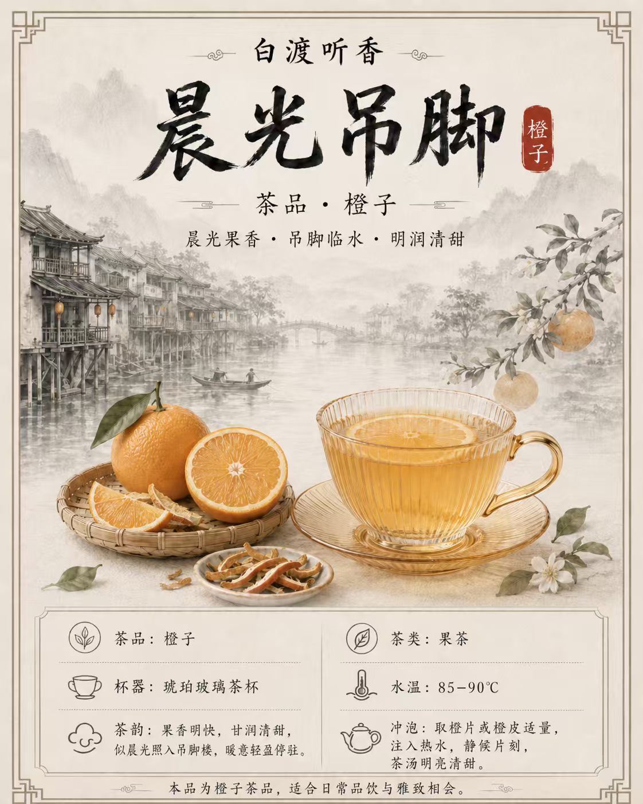
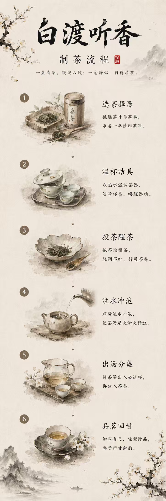

既卖产品，更卖手工制作的过程
在白渡听香体验店，我们将制茶本身作为可以细细体验、品味咀嚼的事务

白河渡口边，茶香经久不散。边城里，老船夫盛着半生风雨，半生恬淡，将一生故事倒入白河。像翠翠守渡船一样，我们守着这一杯干净的茶。

茶峒的暮雨，不是落在江面，而是落在心上。暮雨收进青石板，而我们将雨收入茶汤。好像边城里小镇的温柔。

吊脚楼一半在岸，一半在水，像极了边城的性子。晨光爬上飞檐，染青瓦，渡木窗，凝聚清亮与温柔。
这里，有翠翠的少女心事。她于渡口生长，去茶峒间观龙舟，坐吊脚楼上。这些是十五六岁少女的生活与情致，我们流连赞叹于其美好。
泡茶留香，洒茶散香，吊脚楼上，香气缭绕。边城的情致，晕于茶香中。

在白渡听香体验店，我们将制茶本身作为可以细细体验、品味咀嚼的事务。你可以任选一款，也可以用茶勾勒整个边城叙事。
湘西的茶，等你手作，等你来饮。
期待与您在茶香中品味边城的诗意时光